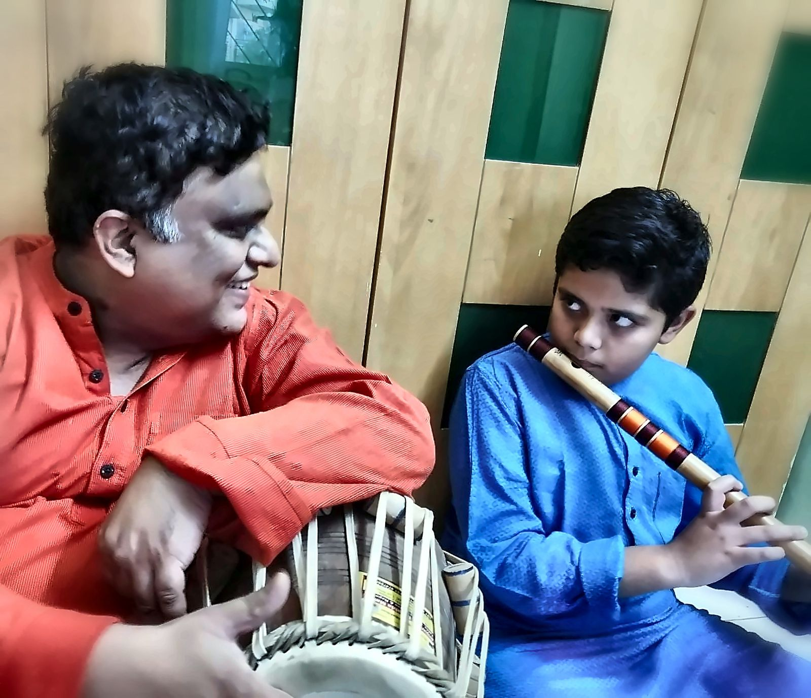

Learning journey
Rooted in two traditions
Over more than a decade of learning, I have trained under respected gurus in Bengaluru in both traditions. Each offers a different way of hearing music: the ornamented, composition-centred language of Carnatic music, and the gradual, improvisatory unfolding of a raga in Hindustani music. Learning the two side by side shapes how I think about melody, phrasing and expression.
-
THE FIRST NOTES
Music and rhythm
Shri Swapnil Sapre
My first guru in music and rhythm, who started me on the bamboo flute at the age of five. We still perform together in the 'Bansuri Beats' duets on the Damruki YouTube channel.
-
FOUNDATIONS
Carnatic flute (Venu)
Vidwan Shri Arun S, Bengaluru
My first Carnatic flute guru, who gave me the foundations of tone, breath and Carnatic raga.
-
BROADENING
Hindustani flute (Bansuri)
Pandit Shri Prakash Hegde, Bengaluru
A growing interest in North Indian music led me to Panditji, with whom I continue to explore raga development and the Hindustani approach to improvisation.
-
TODAY
Carnatic flute (Venu)
Vidwan Ravichandra Kulur, Bengaluru
I now study Carnatic flute with Vidwan Kulur, alongside my continuing Hindustani training with Panditji.
Tala
Rhythm & percussion
Alongside the flute, I learn tabla from Shri Gurumurthy Vaidya and Shri Dhaivat Mehta, and mridangam from Vidwan Nandyala Ramamurthy: the principal percussion instruments of the Hindustani and Carnatic traditions. Understanding tala from the drummer's seat makes me a more attentive accompanist and a more rhythmically secure soloist.
